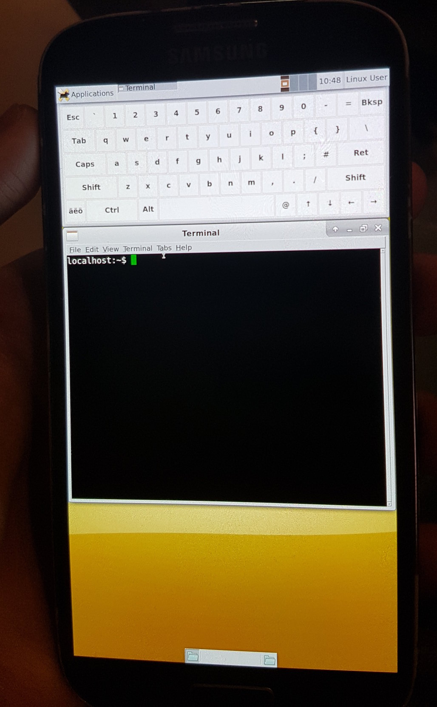

Samsung Galaxy S4 (samsung-jflte)
|
 Galaxy S4 | |
| Manufacturer | Samsung |
|---|---|
| Name | Galaxy S4 |
| Codename | samsung-jflte |
| Released | 2013 |
| Category | testing |
| Original software | Android 4.2.2 (Jelly Bean) |
| postmarketOS kernel | 3.4.113 |
| Hardware | |
| Chipset | Qualcomm Snapdragon 600 (APQ8064AB) |
| CPU | Quad-core 1.9 GHz Krait 300 |
| GPU | Adreno 320 |
| Display | 1080x1920 AMOLED |
| Storage | 16/32 GB |
| Memory | 2 GB |
| Architecture | armv7 |
| Unixbench Whet/Dhry score | 717.1 |
{kind=link}
| USB Networking |
Works
|
|---|---|
| Flashing |
Works
|
| Touchscreen |
Works
|
| Display |
Works
|
| WiFi |
Works
|
| FDE |
Works
|
| Mainline | |
| Battery |
Works
|
| 3D Acceleration | |
| Audio | |
| Bluetooth | |
| Camera | |
| GPS | |
| Mobile data | |
| SMS | |
| Calls | |
| USB OTG | |
| NFC | |
| Accelerometer | |
|---|---|
| Magnetometer | |
| Ambient Light | |
| Proximity | |
| Hall Effect | |
| Barometer | |
| Power Sensor | |
| Camera Flash | |
|---|---|
| Keyboard | |
| Touchpad | |
| USB-A | |
| HDMI/DP | |
| Ir TX | |
| Ir RX | |
| Stylus | |
| Haptics | |
| Ethernet | |
| FOSS bootloader | |
|
This device is based on the Qualcomm Snapdragon 600. See the SoC page for common tips, guides and troubleshooting steps |
Supported models
This page is only for versions of the Galaxy S4 that use the Qualcomm Snapdragon 600 SoC, see https://en.wikipedia.org/wiki/Samsung_Galaxy_S4#Model_variants
Watch out, some versions have bootloaders that can't be unlocked, although the locked versions have a bootloader that contains a bug.
Contributors
- i9505_someone (rrooij on GitHub)
- GrantM11235
Maintainer(s)
Users owning this device
- Bastindo (Notes: 2x black, one has a cracked screen)
- Beni
- BenWolsieffer
- Chmod-rwx (Notes: 3x, 2 working 1 untested)
- GloomyJD (Notes: Works)
- GrantM11235
- Grimler
- I9505 someone
- Igor121 (Notes: playground?)
- JuniorJPDJ (Notes: broken display)
- Lifehackerhansol (Notes: JDCTeam)
- Manty
- MayeulC (Notes: Two I9505, two I9506)
- Nimayer
- Notnoelchannel
- Piero-e (Notes: international LTE / gt-i9505 / running official /e/OS android.11 based (jfltexx))
- PL (Notes: Boots pmOS, screen black. USB Networking works, normal networking is a hassle but can be made to work)
- SnappedAll (Notes: cm13, suspicious display, 2ndary phone)
- Tuxorials (Notes: broken screen)
- Ungeskriptet (Notes: Missing battery and broken panel; Compatible with jfvelte panel)
What works
- Compiling the latest lineageos kernel with some patches applied
- Booting a graphical screen when installing PostmarketOS as recovery zip in TWRP.
- Network connection via USB and SSH access
- Screen works
- Brightness can be changed by echoing a value to /sys/class/backlight/panel/device/backlight as root
- Wifi with properietary blobs
- Touch screen
- Wayland
- X11
- Keyboard and mouse with USB OTG adapter (Hotplug works)
- Initramfs password entry for full disk encryption
What does not work
- Touch screen requires a reboot to work in some rare cases
- 3D acceleration
- Wayland default on screen keyboard
How to enter flash mode
Press volume down + the power button to enter Download Mode. It is now possible to use Heimdall for flashing.
Installation
- Install pmbootstrap
pmbootstrap init
pmbootstrap install
- Put your S4 in Download Mode (Volume Down + Power) and connect it with USB
pmbootstrap flasher flash_kernel
- After the kernel is flashed, the device will reboot. Hold the volume down button while it boots up to re-enter Download Mode
pmbootstrap flasher flash_rootfs
Wifi
Once the device has been successfully initialized, enable it:
$ sudo ip link set wlan0 up
Configure wpa_supplicant (only necessary on encrypted networks):
$ wpa_passphrase $YOUR_SSID | sudo tee /etc/wpa_supplicant/wlan0.conf <enter passphrase here and press Enter>
Connect to network using wpa_supplicant:
$ sudo wpa_supplicant -B -i wlan0 -c /etc/wpa_supplicant/wlan0.conf
If your network uses DHCP, start the DHCP client:
$ sudo udhcpc -i wlan0
Hardware / sensors detail
Output from hwtest on jfltespr sph-l720t:
hwtest output (jfltespr)
| Category | Model | Path | Status | Value |
|---|---|---|---|---|
| framebuffer | msmfb44_80901 | /sys/class/graphics/fb0 | Working | U:1080x1920p-0 |
| framebuffer | msmfb44_70001 | /sys/class/graphics/fb1 | Working | |
| framebuffer | msmfb44_a0001 | /sys/class/graphics/fb2 | Working | |
| input | sec_touchkey | /dev/input/event20 | Working | |
| input | gpio-keys | /dev/input/event19 | Working | |
| input | apq8064-tabla-snd-card Headset Jack | /dev/input/event18 | Working | |
| input | apq8064-tabla-snd-card Button Jack | /dev/input/event17 | Working | |
| input | ssp_context | /dev/input/event16 | Working | |
| input | meta_event | /dev/input/event15 | Working | |
| input | step_cnt_sensor | /dev/input/event14 | Working | |
| input | step_det_sensor | /dev/input/event13 | Working | |
| input | sig_motion_sensor | /dev/input/event12 | Working | |
| input | geomagnetic_sensor | /dev/input/event11 | Working | |
| input | temp_humidity_sensor | /dev/input/event10 | Working | |
| input | proximity_sensor | /dev/input/event9 | Working | |
| input | light_sensor | /dev/input/event8 | Working | |
| input | gesture_sensor | /dev/input/event7 | Working | |
| input | pressure_sensor | /dev/input/event6 | Working | |
| input | gyro_sensor | /dev/input/event5 | Working | |
| input | accelerometer_sensor | /dev/input/event4 | Working | |
| input | sec_touchscreen | /dev/input/event3 | Working | |
| input | max77693-muic | /dev/input/event2 | Working | |
| input | sii8240_rcp | /dev/input/event1 | Working | |
| input | pmic8xxx_pwrkey | /dev/input/event0 | Working |
For reference, sensor information from sensors sandbox (f-droid) on jfltespr sph-l720t; note that in addition to hardware-based sensors, it presumably includes software-based / derived sensors:
sensor details (sensorssandbox)
| name | vendor | version | type |
|---|---|---|---|
| K330 3-axis accelerometer | STMicroelectronics | 1 | 1 |
| YAS532 magnetic sensor | Yamaha Corp | 1 | 2 |
| K330 gyroscope sensor | STMicroelectronics | 1 | 4 |
| Barometer sensor | BOSCH | 1 | 6 |
| MAX88920 proximity sensor | MAXIM, inc. | 1 | 8 |
| CM3323 RGB sensor | Capella Microsystems, inc. | 1 | 5 |
| SHTC1 relative humidity sensor | Sensirion | 1 | 12 |
| SHTC1 ambient temperature sensor | Sensirion | 1 | 13 |
| YAS532 magnetic sensor uncalibrated | Yamaha Corp | 1 | 14 |
| Samsung significant motion sensor | Samsung, inc | 1 | 17 |
| Samsung, inc | 1 | 18 | |
| Samsung step counter sensor | Samsung, inc | 1 | 19 |
| Uncalibrated gyroscope sensor | Samsung, inc | 1 | 16 |
| Screen orientation sensor | Samsung electronics | 3 | 65558 |
| Rotation vector sensor | AOSP | 3 | 11 |
| Gravity sensor | AOSP | 3 | 9 |
| Linear acceleration sensor | AOSP | 3 | 10 |
| Orientation sensor | AOSP | 1 | 3 |
{kind=link}
{kind=link}